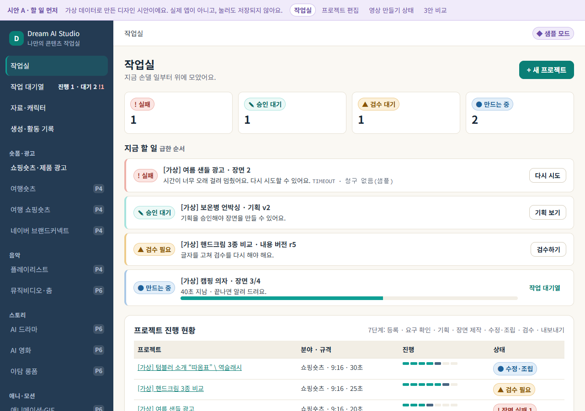
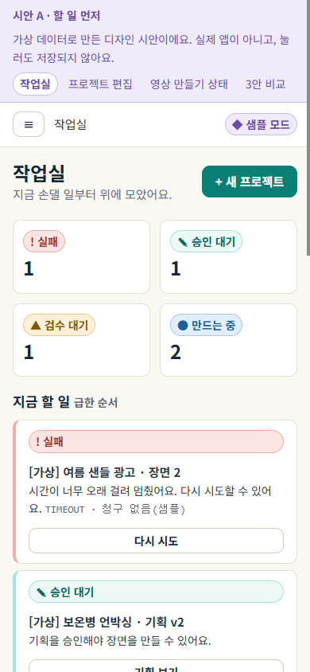
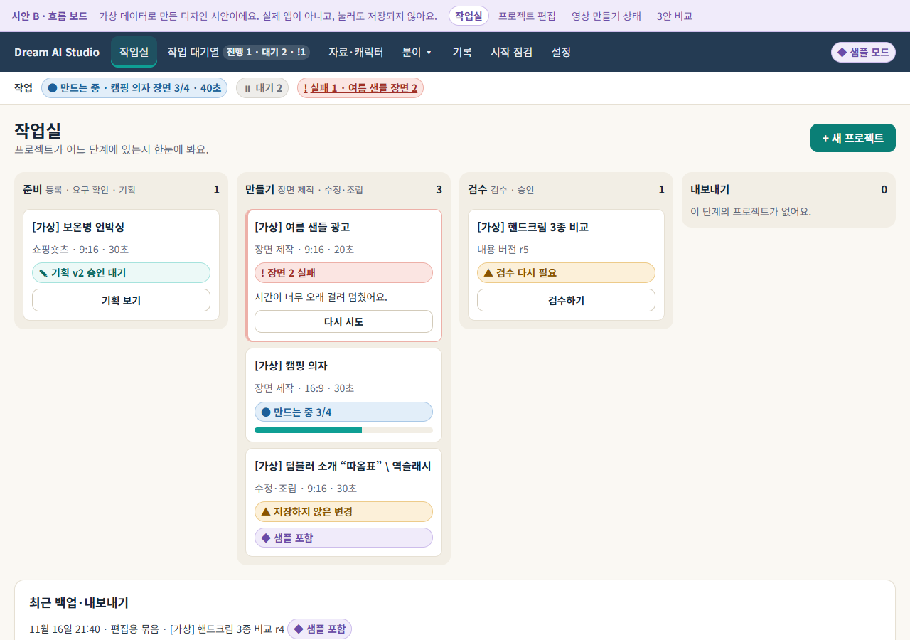
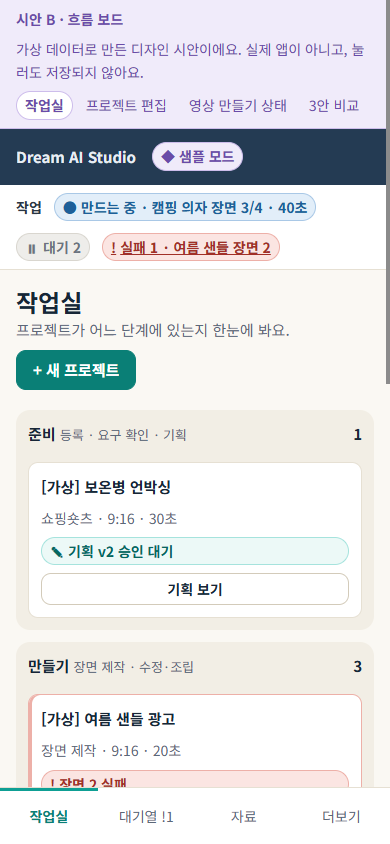
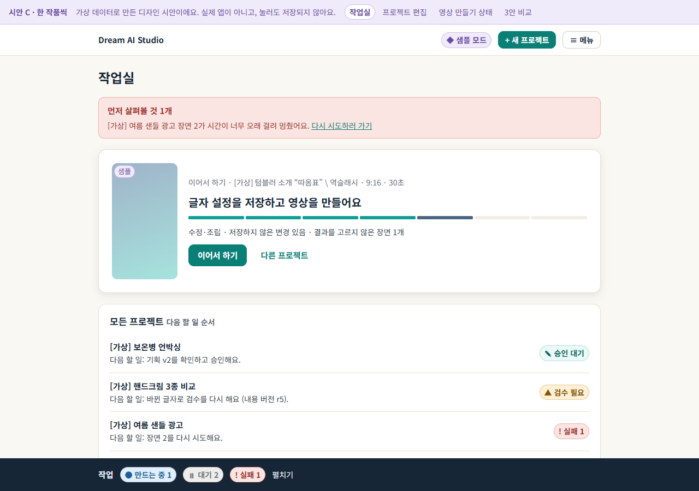
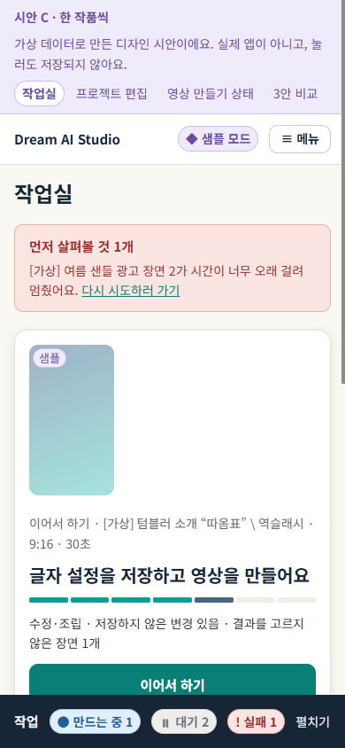

UI 시안 3안
같은 기능·같은 한글 문구로 작업실(진행 상태), 프로젝트 편집, 영상 만들기 대기·오류 세 화면을 1280·390에서 비교해요. 색이 아니라 정보 배치와 작업 진행을 어디에 두는지가 달라요. 색·글자·부품은 지금 디자인 토큰 그대로예요.
시안마다 위쪽 보라 띠에서 세 화면을 바꿔 볼 수 있어요. 영상 만들기(P2-4) 화면은 아직 구현 전이라 T-102 명세의 상태를 가상으로 보여 줘요.
A · 할 일 먼저


지금 앱의 사이드바를 그대로 두고, 작업실 맨 위에 급한 순서의 할 일 목록(실패 → 승인 → 검수 → 만드는 중)을 둬요. 프로젝트 안은 왼쪽 세로 7단계.
- 좋은 점: 지금 앱과 가장 가까워 옮기기 쉽고 위험이 적어요. 분야 16개·업무공간이 늘 보여요.
- 아쉬운 점: 사이드바가 길어 휴대폰에서는 서랍을 열어야 해요. 작업 진행은 대기열 화면에 가야 자세히 보여요.
B · 흐름 보드


위쪽 메뉴 + 늘 보이는 작업 줄. 작업실은 준비 · 만들기 · 검수 · 내보내기 보드. 프로젝트는 미리보기를 왼쪽에 고정하고 오른쪽 패널 탭에 글자·타임라인·장면 순서·영상 만들기.
- 좋은 점: 여러 프로젝트가 어디서 막혔는지 한눈에. 편집하면서 영상 만들기 진행을 같은 화면에서 봐요.
- 아쉬운 점: 셸 구조를 크게 바꿔야 해요(사이드바 → 위 메뉴·휴대폰 아래 메뉴). 분야 목록이 펼침 메뉴 안으로 들어가요.
C · 한 작품씩


메뉴를 서랍으로 줄이고 "이어서 하기" 큰 카드 하나와 프로젝트마다 다음 할 일 한 문장. 프로젝트 안은 단계 펼침 목록, 작업 진행은 모든 화면 아래 작업 트레이.
- 좋은 점: 처음 쓰는 사람도 다음에 뭘 할지 바로 알아요. 휴대폰에 가장 자연스러워요.
- 아쉬운 점: 타임라인처럼 넓은 PC 편집에는 공간이 좁아요. 준비 분야·업무공간이 한 번 더 들어가야 보여요. 아래 트레이가 화면을 조금 가려요.
한눈에 비교
| 기준 | A 할 일 먼저 | B 흐름 보드 | C 한 작품씩 |
|---|---|---|---|
| 지금 앱에서 바꿀 양 | 작게 (작업실·프로젝트 머리만) | 크게 (셸·편집 배치) | 중간 (셸 단순화·편집 펼침) |
| 급한 일 찾기 | 맨 위 목록 ◎ | 보드의 빨간 카드 ○ | 위 빨간 상자 + 큰 카드 ○ |
| 작업 진행 보기 | 숫자 카드·대기열 화면 ○ | 늘 보이는 작업 줄 ◎ | 늘 보이는 트레이 ◎ |
| PC 편집(타임라인) | 넓음 ◎ | 넓음, 미리보기 고정 ◎ | 좁음 △ |
| 휴대폰 | 서랍 + 할 일 목록 ○ | 아래 메뉴 + 세로 보드 ○ | 가장 자연스러움 ◎ |
| 분야 16개·업무공간 보이기 | 늘 보임 ◎ | 펼침 메뉴 ○ | 서랍 안 요약 △ |
추천: A · 할 일 먼저
- 지금 앱의 셸·부품·경로를 그대로 쓰고 작업실 첫 화면과 프로젝트 머리만 바꾸면 돼서, 진행 중인 렌더 작업(T-114)과 부딪히지 않고 가장 빨리 옮길 수 있어요.
- DESIGN 원칙 D1 "지금 손댈 것을 먼저"를 가장 직접적으로 지켜요.
- B·C의 좋은 점 중 늘 보이는 작업 상태는 A의 위 띠에 작은 작업 줄로 더할 수 있어요(후속 제안).
자세한 검증·연결 범위: docs/handoffs/T-115-UI-OPTIONS.md